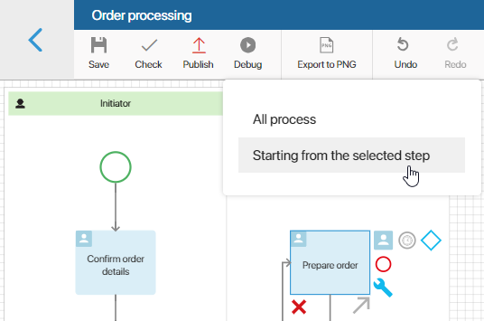
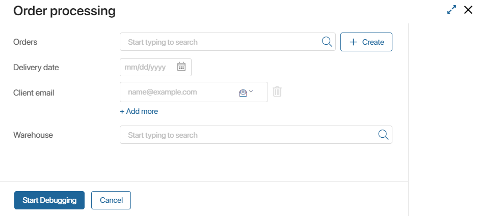
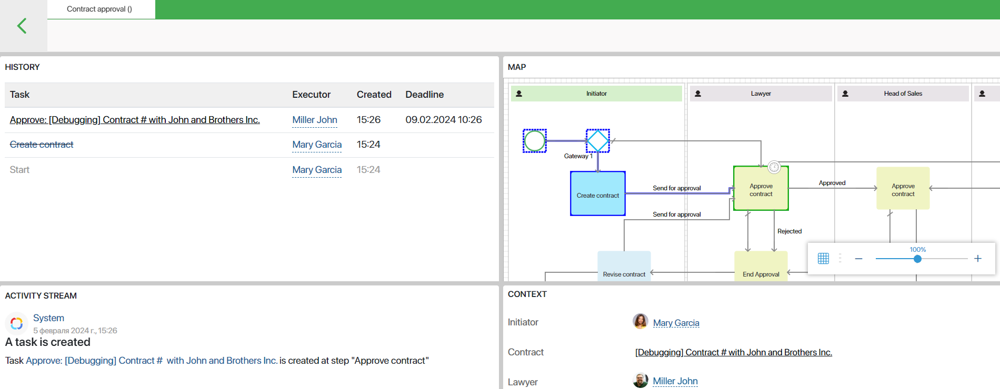
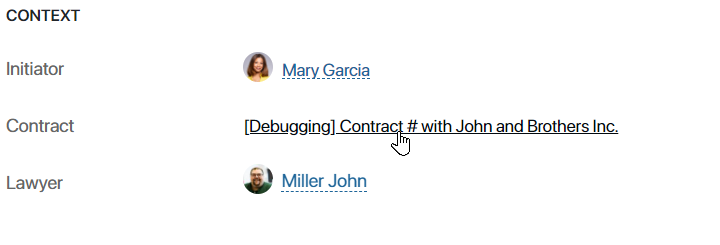

Debugging is a stage of business process development during which errors are detected and corrected. During debugging, the process is run step by step in real time. Thus, you can:
- Check the logic of operations.
- Evaluate how user-friendly and clear the task forms are set up.
- Make sure that all scripts work correctly.
начало внимание
Process debugging is available only to users included in the Administrators group.
конец внимание
Configure the debugging start form
Before debugging, you can set up a start form to fill in the context variables of the process. This way, you won’t need to manually fill in fields in the start event and subsequent tasks of the process during debugging.
To do this, navigate to the Settings tab of the designer and go to the Debugging Settings section. Select the desired context fields there.
Start debugging
начало внимание
For the first version of a process, debugging can only be initiated after its publication.
конец внимание
- Open the process modeling page.
- You can initiate debugging from a specific step. To do this, select the activity shape on the canvas from which you want to run the process. If no activity is selected, debugging will be executed for the entire process.
- On the top panel, click Debug.
If an activity is selected on the canvas, a window will appear to choose the debugging mode: either for the entire process or starting from the selected step. In the picture, the Prepare order activity is selected, so the debugging mode Starting from the selected step is available. If it is selected, debugging will start from this activity.

- The debugging start window will open. If you have configured its form, fill in the specified fields. By default, the window will only display the Start Debugging button. Click it to initiate debugging.

- The debugging monitor will open. It is divided into four sections: History, Map, Activity Stream, and Context.
- History. All tasks assigned during the process are displayed here. You can see information about executors, deadlines, creation date, and errors that occurred when the process was run.
- Map. This is a process diagram that allows you to track process progress in real time. Using the map, you can track which process steps have already been completed and which have not yet been debugged.
- Completed tasks, operations, and connectors are highlighted blue.
- Current activities are highlighted green.
- Activity Stream. This section shows all system notifications that are automatically generated in the process, for example, when a task is performed or assigned, a script is triggered, or a document is generated. This section also shows notifications when a new task is assigned to a specific user.
- Context. In this section, by default, all process context variables and their values are displayed.
If the context variable stores a link to a file or an app, you can open it directly from the Debugging Monitor in the preview mode.

Run a process in the debugging mode
To run a process in the debugging mode, click on the name of a task in the History section. In the provided window, you will see the task page where you can enter data, select a user, attach a file, create an app item. In other words, to simulate all those actions that a user will perform at this step of the process.
All new app items, files, and other system objects are created with the prefix [Debugging] and will be deleted after all the process steps are completed.

начало внимание
If for debugging you select an existing app item and make changes to it at any step of the debugging process, this data will be written to the item and saved after exiting the debugging mode.
конец внимание
If an error occurs at some step of debugging, the name of the incorrectly working operation will be highlighted in red. Hover over it to see the detailed information on the error.
Found a typo? Select it and press Ctrl+Enter to send us feedback